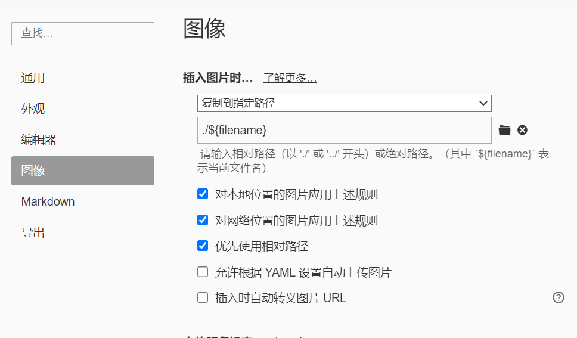
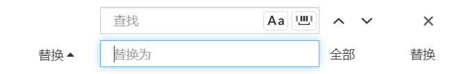
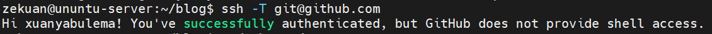
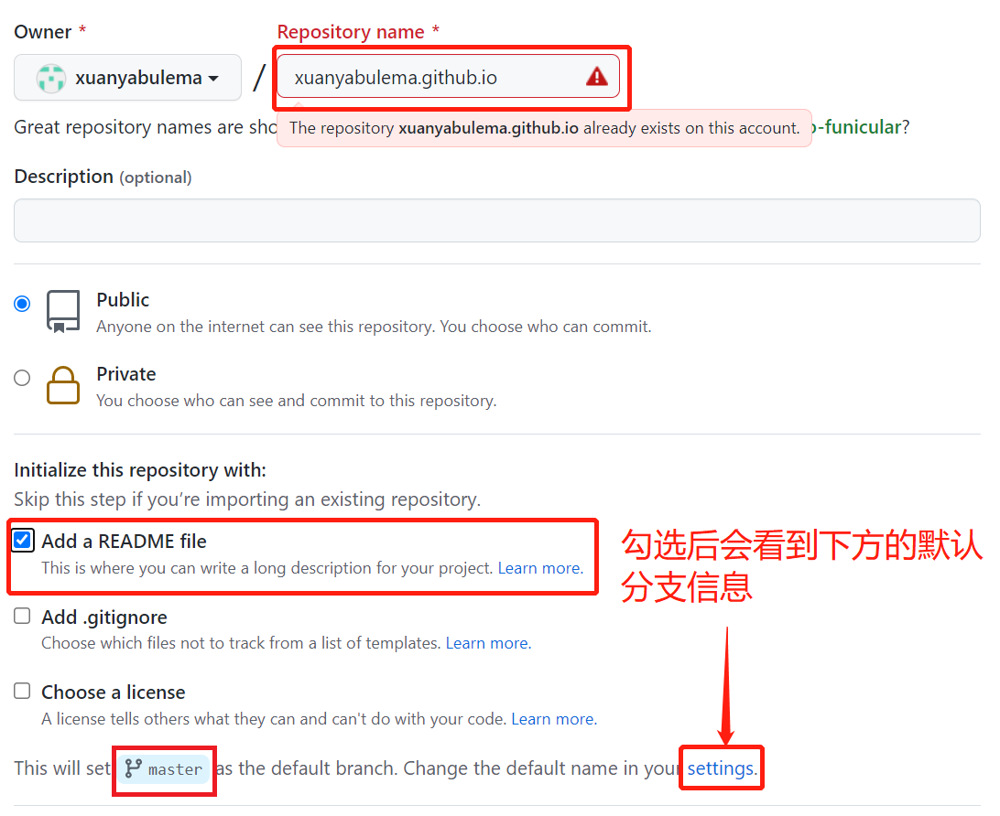

Hexo 安装日志
在 Ubuntu server 20.04 LTS 上安装 Hexo
建议先用su切换为管理员账户，或用root账户登录
这样子后续需要sudo的地方就不需要在打了，而且全程su能避免不必要的错误。
Hexo简介
Hexo 是一个快速、简洁且高效的框架。Hexo 使用 Markdown（或其他渲染引擎）解析文章，在几秒内，即可利用靓丽的主题生成静态网页。
Hexo安装
安装前提一：安装git
sudo apt-get install git-core安装前提二：安装Nodejs
# Using Ubuntu
curl -fsSL https://deb.nodesource.com/setup_lts.x | sudo -E bash -
sudo apt-get install -y nodejs验证安装结果：
node -v
npm -v可安装cnpm替代npm，从而使用国内的淘宝源（可选）
npm install -g cnpm --registry=https://registry.npm.taobao.org此安装方式，npm和cnpm不冲突，都可使用。
正式安装Hexo
sudo npm install -g hexo-cli 可使用cnpm代替安装sudo cnpm install -g hexo-cli 。
验证安装结果：
hexo -v新建一个Blog
创建Blog存放目录并进行初始化
mkdir blog # 新建一个目录，来保存blog文件，出问题删除该文件夹即可进行重建
cd blog
sudo hexo init # 初始化启动并预览
sudo hexo s在浏览器输入ip:4000即可查看
ip为你搭建Hexo的系统的ip地址，以我为例，即我的Ubuntu系统ip
新建一篇文章
sudo hexo n "新的文章"会在你建立的your_blog_directory路径下的/source/_posts/里创建新的文章.md，便可用Markdown写文章了
以我为例新的文章.md在目录blog/source/_posts/下
添加文章后清除缓存文件并重新生成静态文件
sudo hexo clean && sudo hexo gHexo配置
在 Hexo 中有两份主要的配置文件，其名称都是 _config.yml。 其中，一份位于站点根目录下，主要包含 Hexo 本身的站点配置；另一份位于主题目录下，这份配置由主题作者提供，主要用于配置主题相关的选项。
/hexo/_config.yml
/hexo/themes/next/_config.ymlHexo基础配置
作者、语言、时区等设置
# Site
title: 悬崖不勒马的小站
subtitle: ''
description: ''
keywords:
author: 悬崖不勒马
language: zh-CN
timezone: Asia/Shanghai
# URL
## Set your site url here. For example, if you use GitHub Page, set url as 'https://username.github.io/project'
url: https://xuanyabulema.github.io修改并配置Hexo主题——NexT主题
替换主题
以我安装NexT主题为例
版本
在 【必读】更新说明及常见问题 中有相关说明，NexT 一共有三个不同的仓库：
| 版本 | 年份 | 仓库 |
|---|---|---|
| v5.1.4 或更低 | 2014 ~ 2017 | https://github.com/iissnan/hexo-theme-next |
| v6.0.0 ~ v7.8.0 | 2018 ~ 2019 | https://github.com/theme-next/hexo-theme-next |
| v8.0.0 或更高 | 2020 | https://github.com/next-theme/hexo-theme-next |
旧的仓库基本上已经不再更新，因此推荐选择最新的 https://github.com/next-theme/hexo-theme-next仓库的 NexT 主题
cd blog
git clone https://github.com/theme-next/hexo-theme-next themes/next # next 7
git clone https://github.com/next-theme/hexo-theme-next themes/next # next 8更改主题，修改站点配置文件_config.yml，找到如下代码：
## Themes: https://hexo.io/themes/
theme: landscape将theme: landscape改为
theme: next设置头像
https://theme-next.iissnan.com/getting-started.html#avatar-setting
编辑 主题配置文件
修改字段 avatar， 值设置成头像的链接地址。其中，头像的链接地址可以是：
| 地址 | 值 |
|---|---|
| 完整的互联网 URI | http://example.com/avatar.png |
| 站点内的地址 | 将头像放置主题目录下的 source/uploads/ （新建 uploads 目录若不存在） 配置为：avatar: /uploads/avatar.png 或者 放置在 source/images/ 目录下 配置为：avatar: /images/avatar.png |
设置网站的图标Favicon
把图标放在/themes/next/source/images里，并且修改主题配置文件_config.yml：
favicon:
small: /images/favicon_16x16.ico
medium: /images/favicon_32x32.ico
#apple_touch_icon: /images/apple-touch-icon-next.png
#safari_pinned_tab: /images/logo.svg
#android_manifest: /images/manifest.json
#ms_browserconfig: /images/browserconfig.xml添加分类界面
新建分类界面
hexo new page categories成功后会提示：
INFO Created: ~/blog/source/categories/index.md这样就创建了分类页面，但是这个时候主题还不会识别这个页面为分类页，需要编辑这个新建的页面，让主题识别这个页面，并自动为这个页面显示分类。
修改index.md为：
---
title: 文章分类
date: 2021-01-25 22:37:25
type: "categories"
---修改主题配置文件
在themes/next/_config.yml，找到如下代码：
menu:
home: / || home
#about: /about/ || user
#tags: /tags/ || tags
#categories: /categories/ || th
archives: /archives/ || archive
#schedule: /schedule/ || calendar
#sitemap: /sitemap.xml || sitemap
#commonweal: /404/ || heartbeat把 categories 前面的 # 删除，因为默认页面是没有标签界面与分类界面，所以需要我们手动创建添加。
给文章添加分类信息
---
title: Hexo安装日志
date: 2021-11-26 07:39:29
categories:
- 折腾
- Hexo
tags: [Hexo,ubuntu]
---如上设置二级分类则该篇文章为 折腾分类下的 Hexo分类下。
添加标签界面
同分类界面，类似的
新建标签界面
hexo new page tags修改index.md为：
---
title: 标签
date: 2021-01-25 22:37:25
type: "tags"
---修改主题配置文件
在themes/next/_config.yml，找到如下代码：
menu:
home: / || home
#about: /about/ || user
#tags: /tags/ || tags
#categories: /categories/ || th
archives: /archives/ || archive
#schedule: /schedule/ || calendar
#sitemap: /sitemap.xml || sitemap
#commonweal: /404/ || heartbeat把 tags 前面的 # 删除
给文章添加标签信息
---
title: Hexo安装日志
date: 2021-11-26 07:39:29
categories:
- 折腾
- Hexo
tags: [Hexo,ubuntu]
---则标签为"Hexo"和"ubuntu"
添加关于页面
hexo new page "about"在themes/next/_config.yml，找到如下代码：
menu:
home: / || home
#about: /about/ || user
#tags: /tags/ || tags
#categories: /categories/ || th
archives: /archives/ || archive
#schedule: /schedule/ || calendar
#sitemap: /sitemap.xml || sitemap
#commonweal: /404/ || heartbeat把about前面的 # 删除
编辑source/about/目录中的index.md文件即可
配置Markdown与Typora搭配添加图片
安装插件：
sudo npm install hexo-renderer-marked修改_config.yaml站点配置文件：
post_asset_folder: true
marked:
prependRoot: true
postAsset: true当该配置被应用后，使用hexo new命令创建新文章时，会生成相同名字的文件夹，也就是文章资源文件夹。
修改Typora配置

如复制网络路径的图片https://...../image.jpg粘贴到Typora中叫文章名的文章后，图片会自动变为。
但我们知道部署后，文件路径是不同的，所以当我们插入完所有的图片后，我们还需要删除每个图片路径中的文件名/。不慌，也很简单。
在Typora编辑器中，使用<C-f>快捷键，将所有的文章名/替换为空即可删除。

浏览页面显示当前浏览进度
打开 themes/next/_config.yml，搜索关键字 scrollpercent，把 false 改为 true。
Local Search本地搜索
安装插件hexo-generator-searchdb
npm install hexo-generator-searchdb --save修改_config.yml站点配置文件，新增以下内容到任意位置：
search:
path: search.xml
field: post
format: html
limit: 10000编辑 themes/next/_config.yml，启用本地搜索功能：
# Local search
local_search:
enable: true增加文章字数统计及阅读时常功能
安装插件hexo-symbols-count-time,执行以下命令:
npm install hexo-symbols-count-time修改_config.yml站点配置文件
symbols_count_time:
symbols: true
time: true
total_symbols: true
total_time: true
exclude_codeblock: false
awl: 4
wpm: 275
suffix: "mins."字数统计严重不对，感觉统计的是字符数
添加阅读全文
将下述内容添加到项添加的范围即可
<!-- more -->加上妹子
https://blog.csdn.net/as480133937/article/details/100138838#t26
npm install -save hexo-helper-live2d然后在_config.yml中添加参数
live2d:
enable: true
scriptFrom: local
pluginRootPath: live2dw/
pluginJsPath: lib/
pluginModelPath: assets/
tagMode: false
log: false
model:
use: live2d-widget-model-<你喜欢的模型名字>
display:
position: right
width: 150
height: 300
mobile:
show: true在站点目录下建文件夹live2d_models，
再在live2d_models下建文件夹<你喜欢的模型名字>,
再在<你喜欢的模型名字>下建json文件：<你喜欢的模型名字>.model.json
最后安装
npm install --save live2d-widget-model-<你喜欢的模型名字>设置文章模板
模板文件信息位于./scaffold 文件夹下的 post.md 和 draft.md
对应就是 hexo new [layout] <title> 中的 layout , 默认为 post, 草稿为 draft, 如果标题包含空格的话，请使用引号括起来。
---
title: {{ title }}
date: {{ date }}
tags:
categories:
---
点击阅读前文前, 首页能看到的文章的简短描述
<!-- more -->
添加备案号
修改主题配置文件_config.yml
参考修改如下
# Beian ICP and gongan information for Chinese users. See: https://beian.miit.gov.cn, http://www.beian.gov.cn
beian:
enable: true
icp: 浙ICP备2022000215号-1
# The digit in the num of gongan beian.
gongan_id:
# The full num of gongan beian.
gongan_num:
# The icon for gongan beian. See: http://www.beian.gov.cn/portal/download
gongan_icon_url: /images/beian_logo.png让Google搜索到GitHub上的个人博客
安装扩展
npm install hexo-generator-sitemap --save配置站点_config.yml文件
# 自动生成sitemap
sitemap:
path: sitemap.xml部署Hexo到GitHub
生成ssh key以配置和使用GitHub
sudo ssh-keygen -t rsa -C "XXXX@email.com"以我的为例
sudo ssh-keygen -t rsa -C "xuanyabulema@qq.com"cat .ssh/id_rsa.qub然后将cat获取到的结果存至GitHub
验证是否连接成功
ssh -T git@github.com
安装插件
sudo npm install --save hexo-deployer-git新建一个GitHub仓库来保存网页
格式为<你的 GitHub 用户名>.github.io

修改_config.yml
修改末尾为
deploy:
type: git
repo: 创建的仓库地址
branch: 创建的仓库地址的默认分支以我的为例子
deploy:
type: git
repo: git@github.com:xuanyabulema/xuanyabulema.github.io.git
branch: master推送到GitHub
sudo hexo clean && sudo hexo d浏览器输入<你的 GitHub 用户名>.github.io，即可访问
欢迎访问我的xuanyabulema.github.io
一个坑
err: Error: Spawn failed
如果用非root用户ssh-keygen -t rsa -C "XXXX@email.com"，创建将会可以连接的上GitHub，但是在hexo d部署到GitHub时总是失败。
Please make sure you have the correct access rights
and the repository exists.
FATAL {
err: Error: Spawn failed
at ChildProcess.<anonymous> (/home/zekuan/blog/node_modules/hexo-util/lib/spawn.js:51:21)
at ChildProcess.emit (node:events:390:28)
at Process.ChildProcess._handle.onexit (node:internal/child_process:290:12) {
code: 128
}
} Something's wrong. Maybe you can find the solution here: %s https://hexo.io/docs/troubleshooting.html解决方式
删除当前已有的.ssh/下的文件
使用
sudo ssh-keygen -t rsa -C "XXXX@email.com"然后将/root/.ssh/id_rsa.pub下的秘钥添加至GitHub，并进行重新推送sudo hexo clean && sudo hexo d